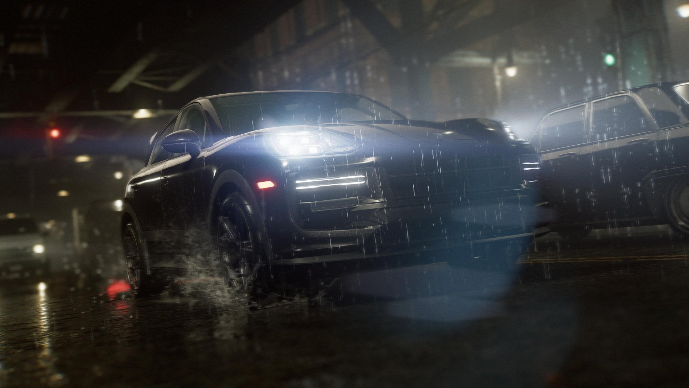
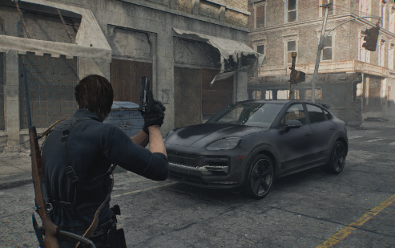

De la realidad al juego
La elección del Cayenne Turbo GT para aparecer en Resident Evil Requiem no fue casual. El personaje del agente Leon S. Kennedy es conocido por su determinación, presencia y estilo inconfundible, atributos que reflejan los del coche que conduce.
Un personaje icónico como Leon y un coche tan potente como el Porsche Cayenne Turbo GT forman una combinación perfecta, mientras que para Porsche, asociarse con una franquicia de videojuegos tan querida como Resident Evil le permitió conectar con la cultura pop de una manera novedosa y memorable.

Capcom llevó el diseño automotriz dentro del universo de Resident Evil Requiem a otro nivel al integrar el Porsche Cayenne Turbo GT como un elemento clave dentro del juego.
Más que un simple vehículo, este SUV de alto rendimiento se convierte en una extensión del personaje de Leon S. Kennedy, aportando dinamismo y velocidad.
IN-GAME
.jpg)
El Porsche Cayenne Turbo GT de la vida real es uno de los modelos más rápidos que ha desarrollado Porsche, destacándose por su potencia y rendimiento extremo.
Equipado con un motor de gasolina de 4.0 litros que desarrolla 650 CV, este SUV acelera de 0 a 96 km/h en tan solo 3,1 segundos y alcanza una velocidad máxima de 306 km/h.
IN REAL LIFE

Dos legados que nunca mueren. En Resident Evil Requiem, Nick Apostolides regresa como Leon S. Kennedy, irrumpiendo en la acción a toda velocidad a bordo de su imponente Porsche Cayenne Turbo GT personalizado.
Dale play y vive la experiencia completa en YouTube.